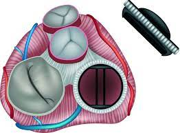

| Opinión | |
| Yo pienso que la fabricación de protesis de órganos en la medicina actual es de gran ayuda, ya que permite la facilidad a los médicos para guiarce al momento de las operación u transplante que se le realizará al paciente, además brinda un aporte a los practicantes ayudandoles a que tengan más confianza y seguridad. |  |